Ranglisten erstellen
Die teilnehmenden Benutzer werden über definierte Regeln, welche die Input-Daten in Punkte umwandeln, direkt miteinander verglichen. Sie können sehen, wo sie sich in Bezug auf ihr Umfeld befinden. Die Regeln sind dabei transparent, sodass Benutzer daraus ableiten können, wie sie ihr Verhalten anpassen müssen, um in der Rangliste besser abzuschneiden.
Ranglisten werden in der WinLine über
1 WinLine INFO
1 SMART
1 SCORE
aus dem Menüpunkt
1 Admin
1 Ranglisten verwalten
definiert, indem in der Kopfleiste "Admin: Rangliste bearbeiten" das "+" Icon selektiert wird.
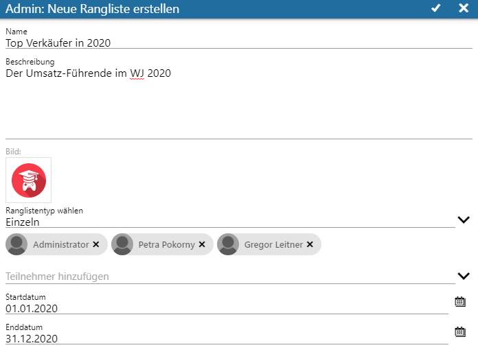
Ø Name und Beschreibung
Hier vergebene Namen und Beschreibungen stellen die Rangliste nach außen dar und sollten eindeutig und bezugnehmend vergeben werden.
Ø Bild
Ermöglicht die Auswahl eines Icons, mit dem die Rangliste abgebildet werden soll.
Ø Ranglistentyp wählen
ü Einzeln
Sind in der
Rangliste einzelne Benutzer vertreten, so werden in der Rangliste auch nur
einzelne Benutzer aufgeführt.
ü Teams
Handelt es sich bei der
Rangliste um eine Team-Rangliste, so werden in der Rangliste die entsprechenden
Team-Namen (anstelle der Benutzernamen) dargestellt.
Ø Teilnehmer hinzufügen
Es können Benutzer oder Benutzergruppen selektiert und hinzugefügt werden.
Hinweis zum Beispiel
Die neue Rangliste soll dem Typ "Einzeln" entsprechen. Weiterhin werden drei WinLine Benutzer (aus der Beschreibung des vorherigen Kapitels) eingesetzt und der zu betrachtende Zeitraum definiert. Über das "x" innerhalb des Benutzer-(Gruppen) Icons können selektierte Teilnehmer wieder entfernt werden.
Ø Startdatum - Enddatum
Der zu betrachtende Zeitraum wird festgelegt.
Über das (in der Kopfleiste des Fensters) vorhandene Check-Icon gelangt man in das Fenster "Admin: Rangliste "Ranglistenname".
Die Basis dieser Rangliste ist nun geschaffen und kann anschließend gem. der Vorgaben weiter definiert werden. Grundsätzlich werden die Angaben übernommen, welche bei der vorherigen Anlage der Rangliste eingetragen worden sind.
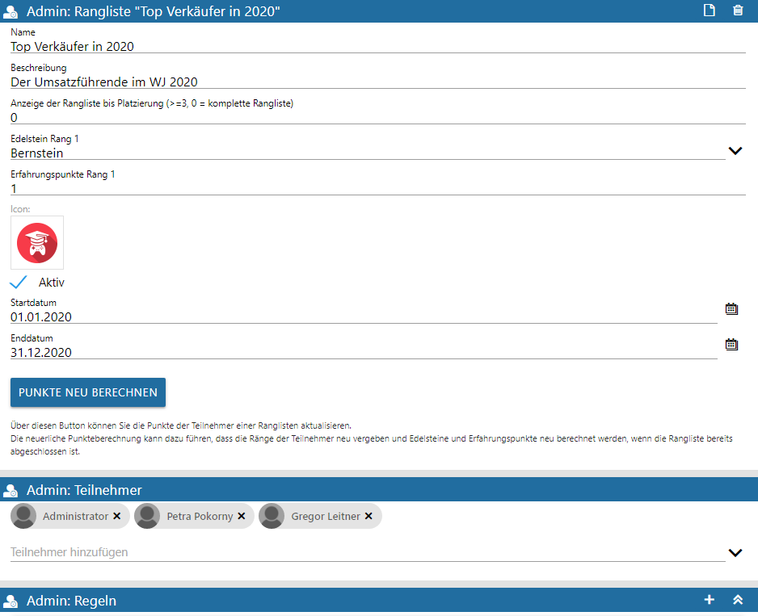
Ø Anzeige der Rangliste bis Platzierung (>=3, 0 = komplette Rangliste)
In diesem Eingabefeld wird über die Tiefe der angezeigten Platzierungen entschieden.
Ø Edelstein Rang 1
Es folgt eine Selektion des Edelsteins, welcher beim Erreichen des 1. Platzes an den entsprechenden Benutzer vergeben werden soll. Dabei kann aus den folgend aufgeführten Arten/Farben gewählt werden:
ü Bernstein
ü Amethyst
ü Smaragd
ü Rubin
ü Saphir
ü Topaz
ü kein Edelstein
Ø Erfahrungspunkte Rang 1
Die eingetragenen Erfahrungspunkte für den erreichten 1. Rang werden dem erstplatzierten Benutzer gutgeschrieben und werden zur elementübergreifenden Gesamtpunktzahl hinzuaddiert. Sofern im Admin-Menü "Level" definiert wurden, wirken sich diese Punkte entsprechend auf das Level des Benutzers aus.
Ø Icon
Optional kann ein anderes Icon selektiert werden.
Ø Checkbox "Aktiv"
Diese Checkbox definiert, ob die Rangliste den berechtigten Benutzern angezeigt werden soll.
Ø Startdatum - Enddatum
Der zu betrachtende Zeitraum muss bearbeitet und/oder weiter eingeschränkt werden.
Ø Button "Punkte neu berechnen"
Über diesen Button können die Punkte der Teilnehmer aktualisiert werden, was dazu führen kann, dass die Ränge neu vergeben und Edelsteine und Erfahrungspunkte neu berechnet werden, wenn die Rangliste bereits abgeschlossen ist.
Ø Admin: Teilnehmer
Benutzer/-Gruppen, die an der Rangliste mitwirken sollen, können angepasst werden.
Ø Admin: Regel
Anschließend kann die Regel der neuen Rangliste bearbeitet werden, indem auf das "+"-Icon geklickt wird.
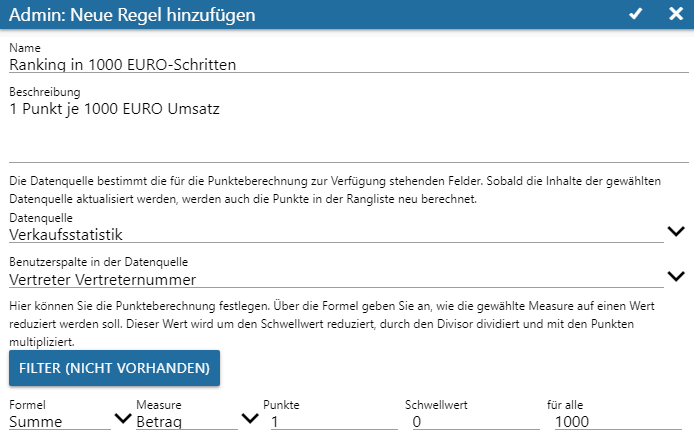
Ø Name und Beschreibung
Um Regeln besser zuordnen zu können, empfiehlt es sich, Name und Beschreibung entsprechend zielgerichtet zu wählen.
Ø Datenquelle
Aus der (über das rechte Icon aufrufbaren) Auswahl muss die bezugnehmende Datenquelle selektiert werden.
Ø Benutzerspalte in der Datenquelle
Ebenso bedarf es der verknüpfenden Spalte, welche zwischen dem angemeldeten WinLine Benutzer und der zu betrachtenden Datenquelle die Verknüpfung herstellen soll.
Ø Button "Filter (Nicht vorhanden)"
Sollen innerhalb der Datenquelle weitere Einschränkungen geltend gemacht werden, so besteht über die Filterdefinition diese Option, sodass aus dem Bereich "Datenfelder" via Drag and Drop "Dimensionen" bzw. "Werte" in den Bereich "Filterfeld hier fallen lassen" gezogen und fallengelassen werden können.
Hinweis
Hier gezeigte Filtereinstellungen sind in diesem Beispiel nicht relevant, sollen aber exemplarisch das Selektieren eines spezifischen Snapshots inkl. einer UND-Verknüpfung (auf ein weiteres Feld) aufzeigen.

Über das Check-Icon in der Kopfleiste wird ein Filter gespeichert.
Definition der Ranglisten-Regel
In den folgenden Eingabefeldern wird festgelegt, wie die Regel die Punkte berechnen soll.
Ø Formel
Hier wird die Formel eingetragen, die für die Ranglistenregel herangezogen werden soll.
Ø Measure
Hier wird der Wert der Datenquelle ausgewählt, auf dessen Basis die Punkte berechnet werden sollen.
Ø Punkte
Hier wird eingetragen, wie viele Punkte pro erfolgreichem Regel-Match vergeben werden sollen.
Ø Schwellenwert
Hier wird angegeben, ab welchem Wert für die Werte Punkte vergeben werden sollen.
Ø für alle
Es wird angegeben, für wie viele Elemente der Werte Punkte vergeben werden sollen.
Angaben des Fensters "Admin: Regel bearbeiten" können auch hier über das Kopfleisten-Check-Icon gespeichert werden, sodass final die fertige Rangliste im Bereich "Admin: Rangliste" zu erkennen ist.
Ø Kopfleisten-Icons der Rangliste

ü Dokument-Icon
Zeigt das
Ergebnis der Rangliste in einem separaten Fenster.
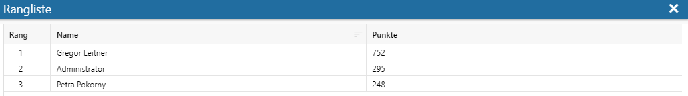
ü Mülleimer-Icon
Löscht
die erstellte Rangliste.
Ø Icons "Admin:Regeln"
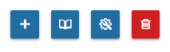
ü "Regelmultiplikator für Gruppe
definieren"
Hiermit kann eine Sub-Regel zur bestehenden Regel angelegt
werden.
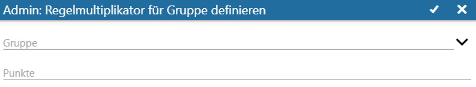
Da Benutzer potenziell Mitglieder in mehreren Benutzergruppen sein können (z. B. Verkauf und Marketing), wird über die Reihung der Sub-Regeln bestimmt, welche Regel greift: Existiert jeweils eine Sub-Regel für den Verkauf, und dem Marketing, und der Benutzer ist Mitglied in beiden Gruppen, greift immer die obere Sub-Regel.
Die Reihenfolge der Sub-Regeln kann über die Pfeiltasten neben den Sub-Regeln in der Regel-Ansichtsbereich editiert werden.
Durch einen Klick auf das "Check-Icon" wird die neue Sub-Regel gespeichert.
Ø "Alternative Measure hinzufügen"
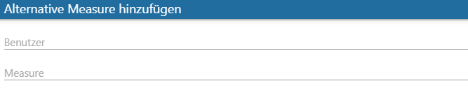
"Admin: Regel
bearbeiten"
Über dieses Icon kann eine Bearbeitung der bestehenden Regel
durchgeführt werden.
"Regel
löschen"
Ermöglicht das Löschen einer angelegten Regel.

Hinweis
Handelt es sich bei der Rangliste um eine Team-Rangliste, so werden in der Rangliste die entsprechenden Team-Namen (anstatt der Benutzernamen) dargestellt. Klickt man auf einen Team-Namen (entweder auf eines der Widgets für die ersten drei Plätze, oder auf eine Zeile darunter für alle weiteren Platzierungen), dann öffnet sich das Team-Profil.
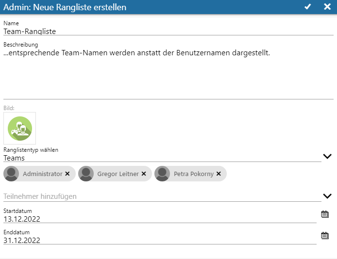
In der Ranglistenübersicht steht anschließend die Option offen, ein neues Team zu bilden. Über das "+"-Icon in der Kopfleiste "Teams" kann situationsbezogen ein Team für das Ranglisten-Element erstellt werden.
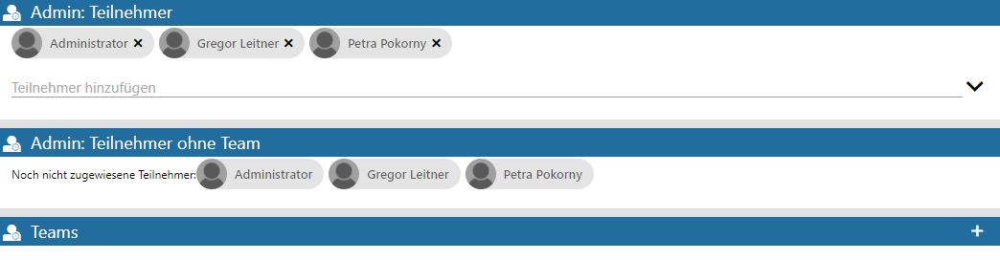
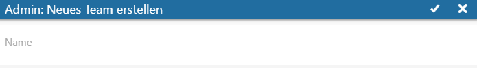
Durch Anklicken der so entstandenen Kachel (für das neue Team) können die zuvor definierten Gruppen/Teilnehmer hinzugefügt werden.
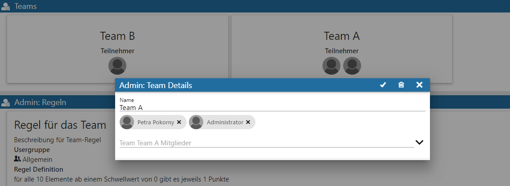
Im Team-Profil werden die Gesamtpunkte, sowie der Rang des Teams, als auch alle Benutzer (und deren Beitrag zu den Gesamtpunkten) dargestellt. Über einen Klick auf eine Benutzerzeile im Team-Profil wird das Profil des entsprechenden Benutzers gezeigt.
Edelsteine für Ranglisten
Edelsteine sind Gegenstände, welche von Benutzern dann gesammelt werden, wenn eine Rangliste endet und die Benutzer den 1. Platz erreicht haben.
Damit nicht jeder "1. Platz" in jeder Rangliste mit demselben Edelstein belohnt wird, existieren Edelsteine in den folgenden Farben/Arten
ü Amethyst
ü Bernstein
ü Rubin
ü Saphir
ü Smaragd
ü Topaz
ü kein Edelstein
Welche Art Edelstein dem 1. Platz am Ende des Ranglisten-Zeitfensters verliehen werden soll, wird in der Ranglistendefinition bestimmt. Neben den sechs Farben/Arten gibt es auch die Auswahl "kein Edelstein". In diesem Fall wird kein Edelstein vergeben.
Dies Anzahl der gewonnenen Edelsteine hängt davon ab, wie oft der Benutzer bei den verschiedenen beendeten Ranglisten den ersten Platz erreicht hat.
Darstellung der Rangliste in den Übersichten
Folgende Abbildungen zeigen die Ranglisten-Ergebnisse:
Ø SCORE Übersicht des teilnehmenden Benutzers
In der SCORE Übersicht des Benutzers stehen die aktiven definierten Ranglisten im Bereich "Meine Ranglisten" zur Verfügung. Zudem werden zusammenhängend vergebene Edelsteine aufgeführt.
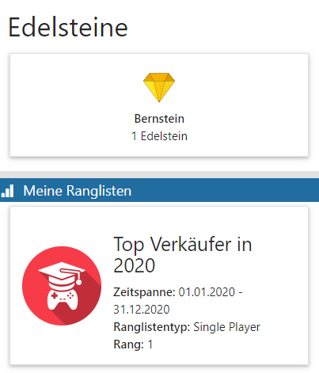
Die aufgeführten Widgets ("Edelsteine" und "Meine Ranglisten") können selektiert und geöffnet werden.
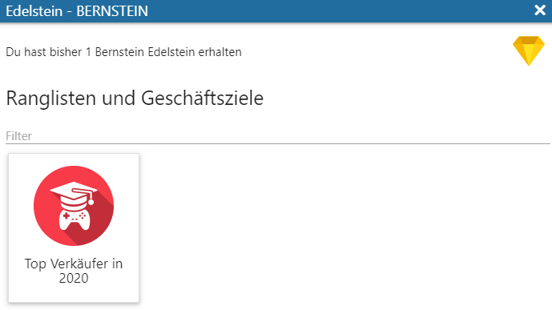
Es können so für Edelsteine bezugnehmende SMART SCORE Elemente angezeigt werden, sodass der Benutzer stets den Ursprung seiner Verdienste erkennen kann. Das darin enthaltene Ranglisten-Element öffnet (analog zur Ranglisten-Kachel "Meine Ranglisten" der SCORE Übersicht) Details zur Rangliste.
Ø Details zur Rangliste
Hier werden zusammenfassend Informationen zur Ranglistendefinition, Platzierung und enthaltener Regeln aufgeführt. Jede der abgebildeten Kacheln ist interaktiv und gibt Profilinformationen des entsprechenden Benutzers aus.
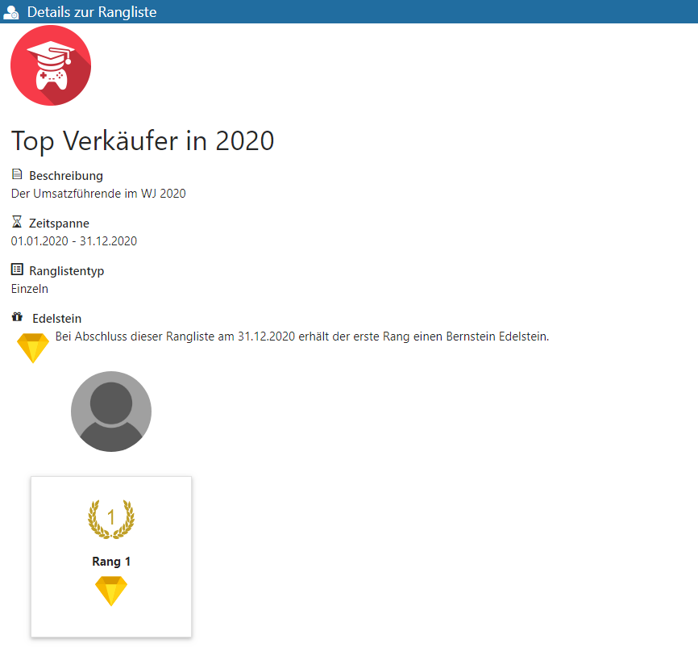
Rangliste
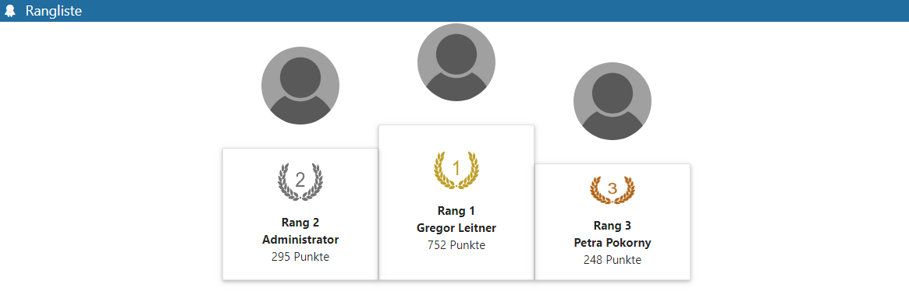
Regeln
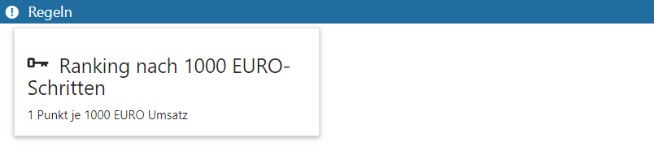